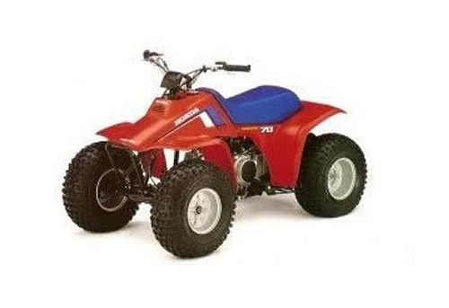
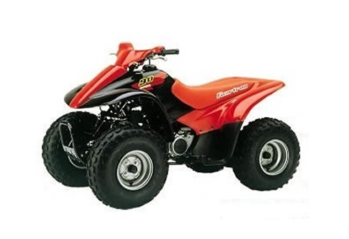
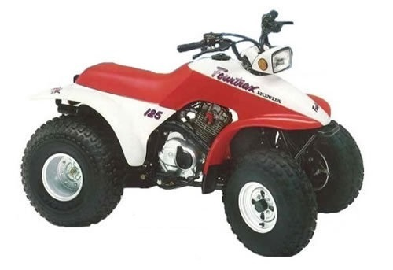

| Honda TRX70 service manual repair 1986-1987 TRX 70 | |
 |
Instant download of the factory repair manual for the 1986-1987 Honda TRX 70 atv. 158 pages. |
 |
| Honda TRX90 service manual repair 1993-2005 TRX 90 | |
 |
Instant download of the factory repair manual for the 1993-2005 Honda TRX 90 atv. 125 pages. |
|
| Honda TRX90 service manual repair 2006-2017 TRX 90ex 90 | |
| Instant download of the factory repair manual for the 2006-2017 Honda TRX 90 atv. 298 pages. | |
|
| Honda TRX125 service manual repair 1985-1986 TRX 125 | |
| Instant download of the factory repair manual for the 1985-1986 Honda TRX 125 atv. 250 pages. | |
|
| Honda TRX125 service manual repair 1987-1988 TRX 125 | |
 |
Instant download of the factory repair manual for the 1987-1988 Honda TRX 125 atv. 193 pages. |
|